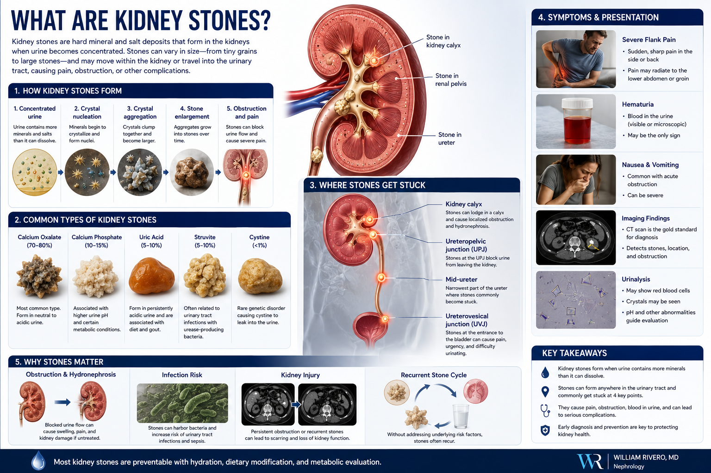
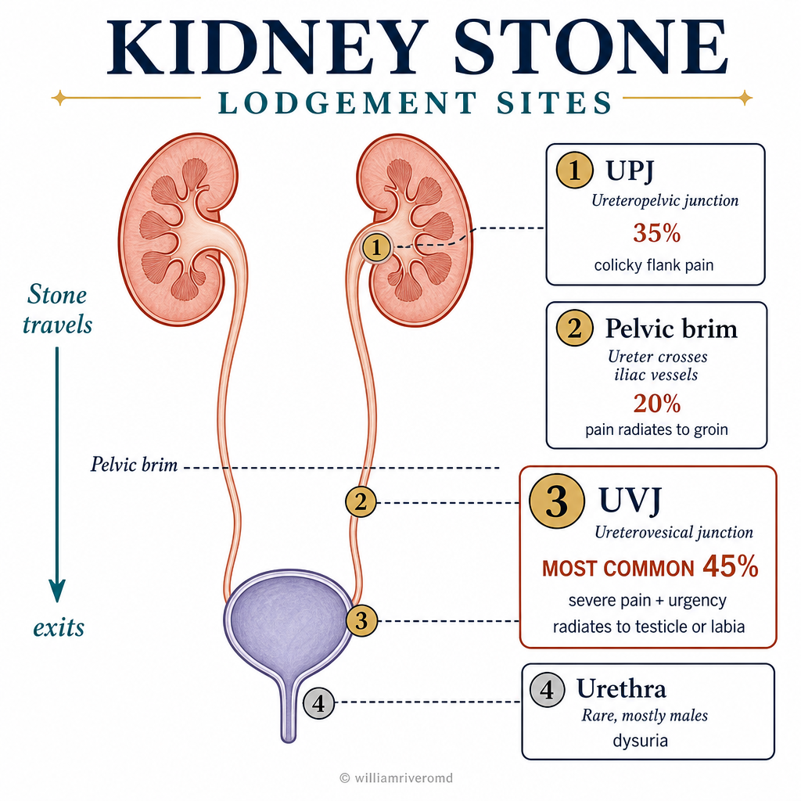
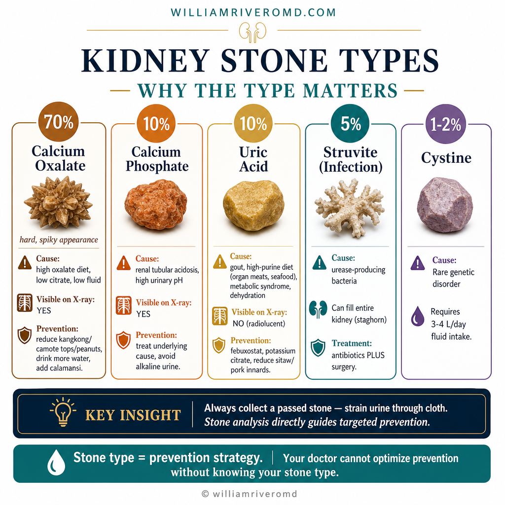
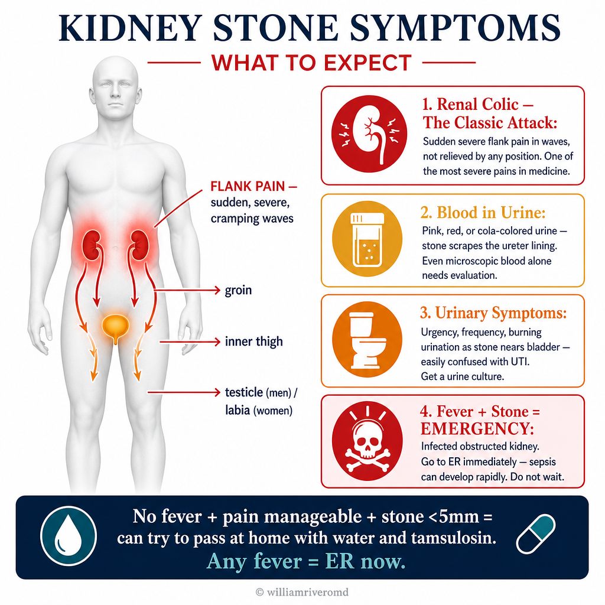
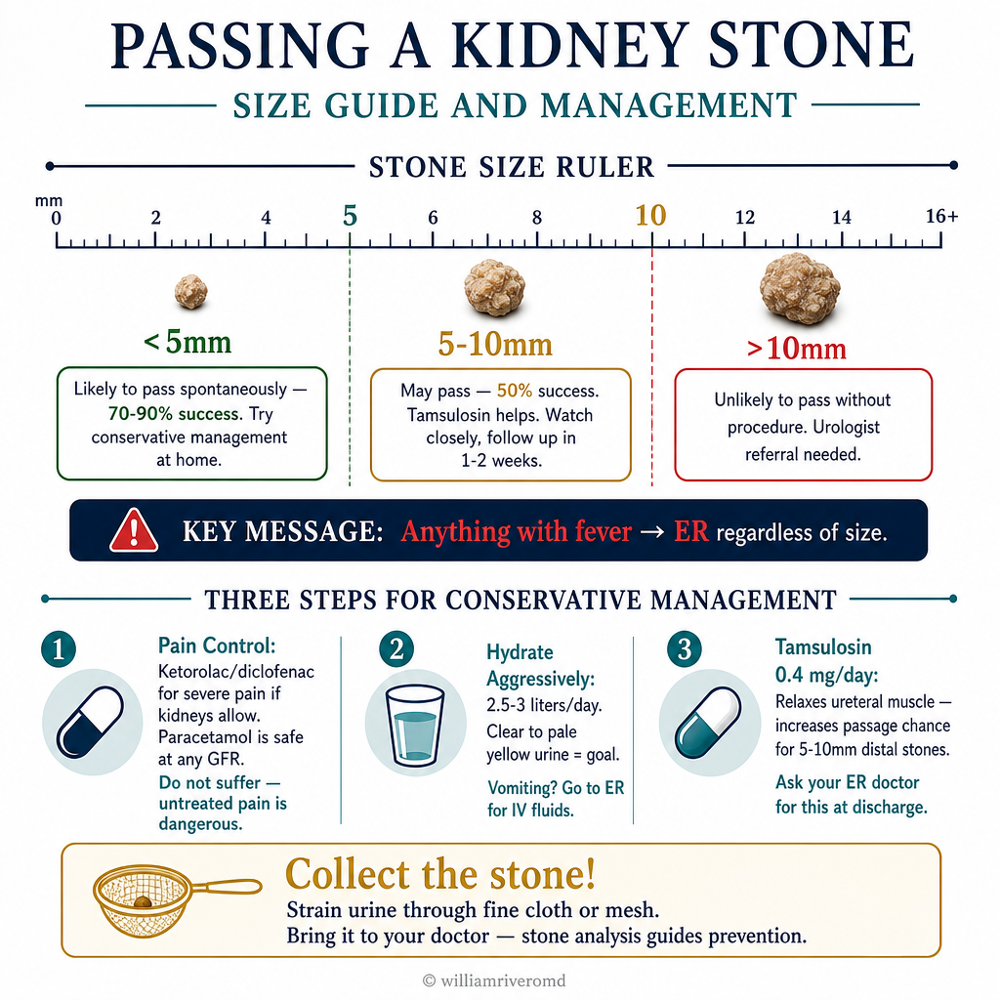
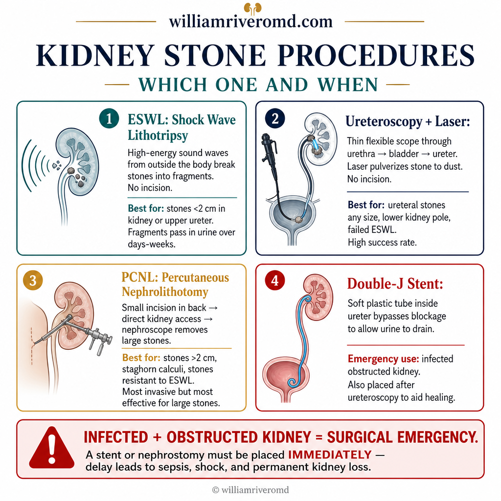
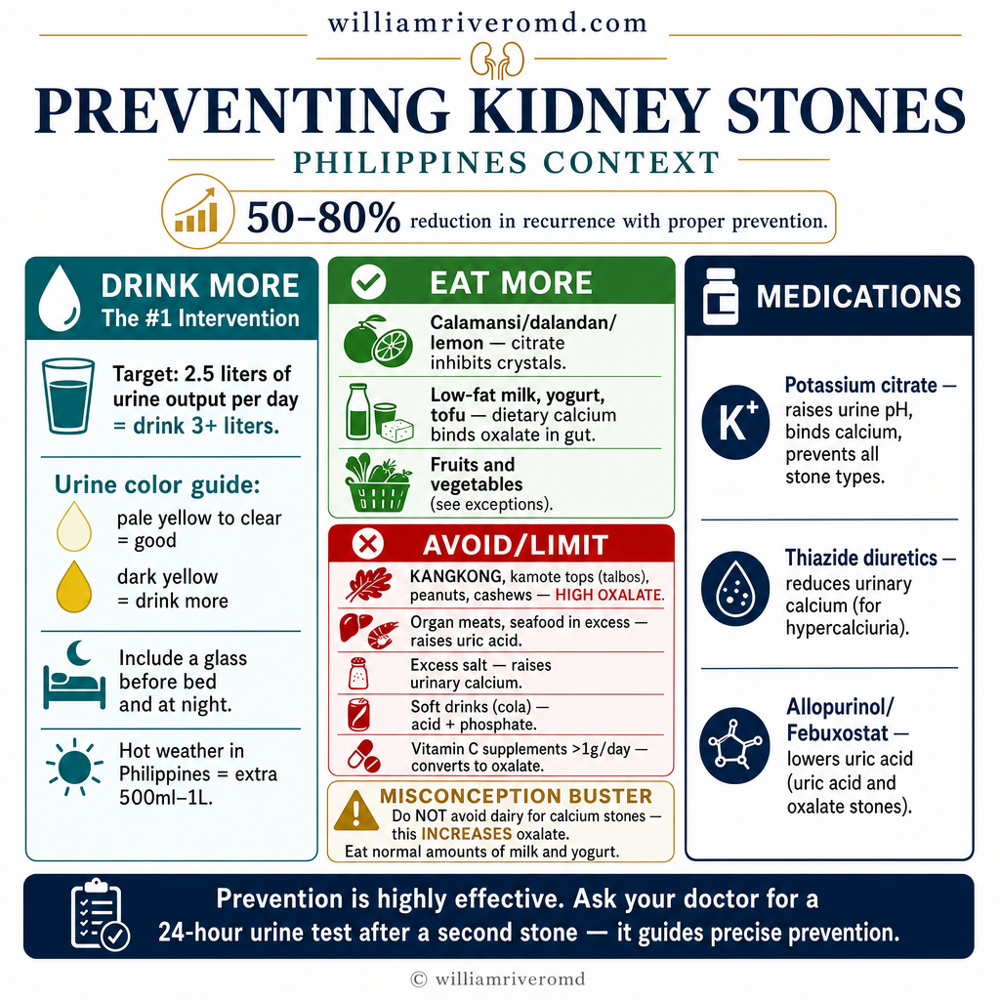

What Are Kidney Stones?Ano ang Bato sa Bato?Unsa ang Bato sa Bato? Ano ing Batu king Batu?

A 24-hour urine collection analysis after a first stone event identifies the exact metabolic cause — enabling precise, targeted prevention rather than generic advice.Ang pagsusuri ng 24-oras na koleksyon ng ihi pagkatapos ng unang episode ng bato ay natutukoy ang eksaktong metabolikong sanhi — nagbibigay-daan sa tumpak at nakatutok na pag-iwas sa halip na pangkalahatang payo.Ang pagsusi sa 24-oras nga koleksyon sa ihi pagkahuman sa unang episode sa bato namatikdan ang eksaktong metabolikong hinungdan — naghatag og tukma ug ginapunting nga paglikay imbes nga kinatibuk-ang tambag. Ing pagsusuri ning 24-oras a koleksyon ning ihi kapabanuan ning unang episode ning batu ya natutukoy ing eksaktong metabolikong sanhi — nagbibigay-daan king tumpak at nakatutok a pag-iwas king halip a pangkalahatang payo.

Kidney stones form when minerals and salts in the urine become too concentrated and crystallize into solid masses inside the kidney. They range from the size of a grain of sand to a golf ball. Small stones may pass unnoticed; larger ones cause excruciating pain — often described as among the worst pain a person can experience.Ang bato sa bato ay nabubuo kapag ang mga mineral at asin sa ihi ay nagiging sobrang konsentrado at nagkristalize sa mga solidong masa sa loob ng bato. Mula sa laki ng butil ng buhangin hanggang sa golfball. Ang maliliit na bato ay maaaring lumabas nang hindi napapansin; ang malalaki ay nagdudulot ng matinding sakit — kadalasang inilarawan bilang isa sa pinakamasamang sakit na mararamdaman ng isang tao.Ang bato sa bato nabuhatan kon ang mga mineral ug asin sa ihi mahimong sobrang konsentrado ug magkristal sa mga solidong masa sulod sa bato. Gikan sa gidak-on sa butil sa balas hangtod sa golf ball. Ang gagmayng bato mahimong molabas nga dili mamatikdan; ang dagkong nagdala og makasingkil nga sakit — sagad gihulagway ingon usa sa labing grabeng sakit nga masinati sa usa ka tawo. Ing batu king batu ya nabubuo nung ing deng mineral at asin king ihi ya nagiging sobrang konsentrado at nagkristalize king deng solidong masa king loob ning batu. Mula king laki ning butil ning buhangin anggang king golfball. Ing maliliit a batu ya maaaring lumabas nang ali napapansin; ing malalaki ya nagdudulot ning matinding sakit — kadalasang inilarawan bilang metung king pinakamasamang sakit a mararamdaman ning metung a tao.
Kidney stones are extremely common in the Philippines — made worse by hot weather, inadequate hydration, high-purine diets, and the high prevalence of metabolic syndrome, gout, and diabetes. Once you have had one stone, your lifetime recurrence risk without prevention is over 50%.Ang bato sa bato ay napakaraming sa Pilipinas — pinapalala ng mainit na panahon, kulang na hydrasyon, mga pagkaing mataas sa purine, at mataas na prevalence ng metabolic syndrome, gout, at diabetes. Kapag nagkaroon na kayo ng isang bato, ang inyong panghabambuhay na panganib ng pagbabalik nang walang pag-iwas ay higit sa 50%.Ang bato sa bato grabeng kasagaran sa Pilipinas — gipalala sa mainit nga panahon, kulang nga hydrasyon, mga pagkaon nga taas sa purine, ug taas nga prevalence sa metabolic syndrome, gout, ug diabetes. Sa dihang aduna na kamo'y usa ka bato, ang inyong tibuok kinabuhi nga peligro sa pagbalik nga walay paglikay labaw sa 50%. Ing batu king batu ya napakaraming king Pilipinas — pinapalala ning mainit a panahon, kulang a hydrasyon, deng pagkaing matas king purine, at matas a prevalence ning metabolic syndrome, gout, at diabetes. Nung nagkaroon a kayu ning metung a batu, ing inyu panghabambuhay a panganib ning pagbabalik nang alang pag-iwas ya higit king 50%.
Why do stones form?Bakit nabubuo ang mga bato?Nganong nabuhatan ang mga bato? Bakit nabubuo ing deng batu?
Three conditions must be present: supersaturation of stone-forming minerals, low urine volume (concentrated urine), and absence of natural inhibitors (citrate, magnesium). When minerals exceed their solubility threshold in concentrated urine, crystals nucleate and grow into stones over weeks to months.Tatlong kondisyon ang kailangang mayroon: supersaturation ng mga mineral na bumubuo ng bato, mababang dami ng ihi (konsentradong ihi), at kawalan ng natural na mga inhibitor (citrate, magnesium). Kapag lumampas ang mga mineral sa kanilang threshold ng solubility sa konsentradong ihi, ang mga kristal ay nabubuo at lumalaki sa mga bato sa loob ng ilang linggo hanggang buwan.Tulo ka kondisyon ang kinahanglan: supersaturation sa mga mineral nga nagbuhatan sa bato, ubos nga dami sa ihi (konsentradong ihi), ug kawalay natural nga mga inhibitor (citrate, magnesium). Kon molabaw ang mga mineral sa ilang threshold sa solubility sa konsentradong ihi, ang mga kristal nagsugod ug motubo ngadto sa mga bato sulod sa pipila ka semana hangtod bulan. Tatlong kondisyon ing kailangang mayroon: supersaturation ning deng mineral a bumubuo ning batu, mababang dami ning ihi (konsentradong ihi), at kawalan ning natural a deng inhibitor (citrate, magnesium). Nung lumampas ing deng mineral king kanilang threshold ning solubility king konsentradong ihi, ing deng kristal ya nabubuo at lumalaki king deng batu king loob ning ilang lutu anggang bulan.
Risk factors in FilipinosMga risk factor sa mga PilipinoMga risk factor sa mga Pilipino Deng risk factor king deng Pilipino
Inadequate water intake, high-purine diet (organ meats, seafood), high oxalate foods (kangkong, camote tops, nuts), hot climate causing increased insensible fluid loss, metabolic syndrome, hyperuricemia, and primary hyperparathyroidism all significantly increase stone risk.Kulang na pag-inom ng tubig, pagkaing mataas sa purine (mga lamang-loob, pagkaing-dagat), mga pagkaing mataas sa oxalate (kangkong, talbos ng camote, mani), mainit na klima na nagdudulot ng pagtaas ng insensible fluid loss, metabolic syndrome, hyperuricemia, at primary hyperparathyroidism ay lahat ay makabuluhang nagpapataas ng panganib ng bato.Kulang nga pag-inom sa tubig, pagkaon nga taas sa purine (mga lamang-loob, pagkaon-dagat), mga pagkaon nga taas sa oxalate (kangkong, talbos sa camote, mani), mainit nga klima nga nagdala og pagtaas sa insensible fluid loss, metabolic syndrome, hyperuricemia, ug primary hyperparathyroidism tanan nagpataas kaayo sa peligro sa bato. Kulang a pag-inom ning danum, pagkaing matas king purine (deng lamang-loob, pagkaing-dagat), deng pagkaing matas king oxalate (kangkong, talbos ning camote, mani), mainit a klima a nagdudulot ning pagtaas ning insensible fluid loss, metabolic syndrome, hyperuricemia, at primary hyperparathyroidism ya amin ya makabuluhang nagpapataas ning panganib ning batu.
Types of Kidney Stones — Why the Type MattersMga Uri ng Bato sa Bato — Bakit Mahalaga ang UriMga Klase sa Bato sa Bato — Nganong Importante ang Klase Deng Uri ning Batu king Batu — Bakit Importante ing Uri

The type of stone determines the cause, the best prevention strategy, and the medications needed. Stone analysis (from a passed or surgically removed stone) is the most reliable way to identify type — always try to collect and bring any passed stone to your doctor.Ang uri ng bato ay nagtatakda ng sanhi, pinakamabuting estratehiya sa pag-iwas, at mga gamot na kailangan. Ang pagsusuri ng bato (mula sa lumabas o surgically na tinanggal na bato) ay ang pinaka-maaasahang paraan para matukoy ang uri — laging subukang kolektahin at dalhin ang anumang lumabas na bato sa inyong doktor.Ang klase sa bato nagtino sa hinungdan, pinakamabuting estratehiya sa paglikay, ug mga tambal nga kinahanglan. Ang pagsusi sa bato (gikan sa nalabas o surgically nga giwagtang nga bato) ang labing kasaligan nga paagi aron mahibal-an ang klase — kanunay pagsulayi sa pagkolekta ug pagdala sa bisan unsang nalabas nga bato sa imong doktor. Ing uri ning batu ya nagtatakda ning sanhi, pinakamabuting estratehiya king pag-iwas, at deng gamut a kailangan. Ing pagsusuri ning batu (mula king lumabas o surgically a tinanggal a batu) ya ing pinaka-maaasahang paraan para matukoy ing uri — pirming subukang kolektahin at dalhin ing anumang lumabas a batu king inyu doktor.
Always try to collect a passed stoneLaging subukang kolektahin ang lumabas na batoKanunay pagsulayi sa pagkolekta sa nalabas nga bato Pirming subukang kolektahin ing lumabas a batu
Strain your urine through a fine mesh strainer or clean cloth when you know a stone is passing. Place the stone in a clean dry container and bring it to your doctor. Stone analysis by laboratory is the most accurate way to determine type and guide specific prevention — far more reliable than diet history or urine chemistry alone.Salain ang inyong ihi sa pamamagitan ng pinong mesh strainer o malinis na tela kapag alam ninyong lumalabas na ang bato. Ilagay ang bato sa malinis na tuyong lalagyan at dalhin sa inyong doktor. Ang pagsusuri ng bato sa laboratoryo ang pinaka-tumpak na paraan para matukoy ang uri at gabayan ang tiyak na pag-iwas — higit na maaasahan kaysa sa kasaysayan ng diyeta o chemistry ng ihi lamang.Salaon ang imong ihi pinaagi sa pinong mesh strainer o malinis nga tela kon nahibal-an nimo nga molabas na ang bato. Ibutang ang bato sa malinis nga uga nga sudlanan ug dalha sa imong doktor. Ang pagsusi sa bato sa laboratoryo ang labing tukma nga paagi aron mahibal-an ang klase ug magiyahan ang espesipikong paglikay — labi ka kasaligan kaysa sa kasaysayan sa diyeta o chemistry sa ihi lamang. Salain ing inyu ihi king pamamagitan ning pinong mesh strainer o malinis a tela nung alam ninyong lumalabas a ing batu. Ilagay ing batu king malinis a tuyong lalagyan at dalhin king inyu doktor. Ing pagsusuri ning batu king laboratoryo ing pinaka-tumpak a paraan para matukoy ing uri at gabayan ing tiyak a pag-iwas — higit a maaasahan kaysa king kasaysayan ning diyeta o chemistry ning ihi lamang.
Symptoms — What Kidney Stones Feel LikeMga Sintomas — Ano ang Pakiramdam ng Bato sa BatoMga Sintomas — Unsa ang Gibati sa Bato sa Bato Deng Sintomas — Ano ing Pakiramdam ning Batu king Batu

The symptoms of a kidney stone depend on its size and location. Small stones in the kidney may cause no symptoms at all and be found incidentally on imaging. A stone that moves into the ureter triggers the classic renal colic attack.Ang mga sintomas ng bato sa bato ay nakasalalay sa laki at lokasyon nito. Ang maliliit na bato sa bato ay maaaring walang sintomas at natutuklasan lamang nang hindi sinasadya sa imaging. Ang batong gumagalaw patungong ureter ay nagdudulot ng klasikong renal colic attack.Ang mga sintomas sa bato sa bato nagdepende sa gidak-on ug lokasyon niini. Ang gagmayng bato sa bato mahimong walay sintomas ug nakit-an lamang sa walay tuyo sa imaging. Ang bato nga mobalhin ngadto sa ureter nagdala sa klasikong renal colic attack. Ing deng sintomas ning batu king batu ya nakasalalay king laki at lokasyon nini. Ing maliliit a batu king batu ya maaaring alang sintomas at natutuklasan lamang nang ali sinasadya king imaging. Ing batong gumagalaw patungong ureter ya nagdudulot ning klasikong renal colic attack.
Renal colic — the classic attackRenal colic — ang klasikong atakeRenal colic — ang klasikong atake Renal colic — ing klasikong atake
Sudden onset of severe, cramping pain in the flank (side of the back, below the ribs) that radiates to the groin, inner thigh, or genitals as the stone moves down the ureter. The pain comes in waves, is not relieved by position change, and may be accompanied by nausea and vomiting. It is one of the most severe pains known to medicine.Biglaang pagsisimula ng matindi, cramping na sakit sa tagiliran (gilid ng likod, sa ibaba ng mga tadyang) na pumupunta sa singit, panloob na hita, o genitals habang gumagalaw pababa ang bato sa ureter. Ang sakit ay papalit-palit, hindi naaalis sa pagbabago ng posisyon, at maaaring kasama ang pagduwal at pagsusuka. Isa ito sa pinaka-matinding sakit na kilala sa medisina.Kalit nga pagsugod sa grabe, cramping nga sakit sa kilid (kilid sa likod, ubos sa mga gusok) nga mobalhin sa singit, sulod nga paa, o genitals samtang mobalhin paubos ang bato sa ureter. Ang sakit mosunod-sunod, dili maayo sa pagbag-o sa posisyon, ug mahimong kauban ang pagsuka-suka ug pagsuka. Usa kini sa labing grabeng sakit nga nahibal-an sa medisina. Biglaang pagsisimula ning matindi, cramping a sakit king tagiliran (gilid ning likod, king ibaba ning deng tadyang) a pumupunta king singit, panloob a hita, o genitals habang gumagalaw pababa ing batu king ureter. Ing sakit ya papalit-palit, ali naaalis king pagbabago ning posisyon, at maaaring kasama ing pagduwal at pagsusuka. Metung ini king pinaka-matinding sakit a kilala king medisina.
Blood in the urine (hematuria)Dugo sa ihi (hematuria)Dugo sa ihi (hematuria) Daya king ihi (hematuria)
The stone scratches the delicate lining of the ureter, causing bleeding. Urine may appear pink, red, or cola-colored. Even microscopic hematuria (blood only visible under microscope) is a common finding. Blood in the urine alone, without pain, still requires evaluation.Ang bato ay kumukurot sa maselang lining ng ureter, nagdudulot ng pagdurugo. Ang ihi ay maaaring maging pink, pula, o cola-kulay. Kahit ang microscopic hematuria (dugo na nakikita lamang sa mikroskopyo) ay isang karaniwang natutuklasan. Ang dugo sa ihi lamang, nang walang sakit, ay nangangailangan pa rin ng pagsusuri.Ang bato nagkamot sa maayad nga lining sa ureter, nagdala og pagdugo. Ang ihi mahimong maging pink, pula, o cola-kolor. Bisan ang microscopic hematuria (dugo nga makita lamang sa mikroskopyo) usa ka kasagarang nakit-an. Ang dugo sa ihi lamang, nga walay sakit, nagkinahanglan pa gihapon og pagsusi. Ing batu ya kumukurot king maselang lining ning ureter, nagdudulot ning pagdurugo. Ing ihi ya maaaring maging pink, pula, o cola-kulay. Kahit ing microscopic hematuria (daya a nakikita lamang king mikroskopyo) ya metung a karaniwang natutuklasan. Ing daya king ihi lamang, nang alang sakit, ya nangangailangan pa rin ning pagsusuri.
Urinary symptomsMga sintomas sa ihiMga sintomas sa ihi Deng sintomas king ihi
As the stone approaches the bladder junction, it causes urinary urgency, frequency, burning on urination, and the feeling of incomplete bladder emptying — symptoms easily confused with a urinary tract infection. A urine culture distinguishes the two.Habang papalapit ang bato sa junction ng pantog, nagdudulot ito ng pagkaapura sa pag-ihi, madalas na pag-ihi, pagsusunog sa pag-ihi, at pakiramdam na hindi kumpletong nababakante ang pantog — mga sintomas na madaling mapagkamalian bilang urinary tract infection. Ang urine culture ang nagpapalain sa dalawa.Samtang nagpaduol ang bato sa junction sa pantog, nagdala kini og pagdali sa pag-ihi, kanunay nga pag-ihi, pagsunog sa pag-ihi, ug pagsabot nga dili kumpletong naubos ang pantog — mga sintomas nga daling malibog sa urinary tract infection. Ang urine culture nagpalain sa duha. Habang papalapit ing batu king junction ning pantog, nagdudulot ini ning pagkaapura king pag-ihi, madalas a pag-ihi, pagsusunog king pag-ihi, at pakiramdam a ali kumpletong nababakante ing pantog — deng sintomas a madaling mapagkamalian bilang urinary tract infection. Ing urine culture ing nagpapalain king dalawa.
Fever and chills — a serious signLagnat at panginginig — isang seryosong senyalesHilanat ug pangalisngaw — usa ka seryosong timailhan Lagnat at panginginig — metung a seryosong senyales
A kidney stone with fever indicates an infected, obstructed kidney (obstructive pyelonephritis or pyonephrosis). This is a urological emergency — the infected urine cannot drain, and sepsis can develop rapidly. Go to the ER immediately. This is not a "wait and see" situation.Ang bato sa bato na may lagnat ay nagpapahiwatig ng infected, obstructed na bato (obstructive pyelonephritis o pyonephrosis). Ito ay isang urological emergency — ang infected na ihi ay hindi makalabas, at ang sepsis ay maaaring mabilis na magkaroon. Pumunta sa ER agad. Hindi ito isang "hintayin at tingnan" na sitwasyon.Ang bato sa bato nga adunay hilanat nagpakita sa infected, obstructed nga bato (obstructive pyelonephritis o pyonephrosis). Kini usa ka urological emergency — ang infected nga ihi dili makaagos, ug ang sepsis mahimong molambo og dali. Adto sa ER dayon. Dili kini usa ka "huwaton ug tan-awon" nga sitwasyon. Ing batu king batu a atin lagnat ya nagpapahiwatig ning infected, obstructed a batu (obstructive pyelonephritis o pyonephrosis). Ini ya metung a urological emergency — ing infected a ihi ya ali makalabas, at ing sepsis ya maaaring mabilis a magkaroon. Pumunta king ER agad. Ali ini metung a "hintayin at tingnan" a sitwasyon.
How Kidney Stones Are DiagnosedPaano Nasusuri ang Bato sa BatoUnsaon Pagsusi sa Bato sa Bato Paano Nasusuri ing Batu king Batu
| TestPagsusuriPagsusi Pagsusuri | What it detectsAno ang natutuklas nitoUnsa ang namatikdan niini Ano ing natutuklas nini | NotesMga TalaMga Tala Deng Tala |
|---|---|---|
| CT scan (non-contrast KUB)CT scan (non-contrast KUB)CT scan (non-contrast KUB) CT scan (non-contrast KUB) | Gold standard — detects all stone types including uric acid stones (radiolucent on X-ray), shows exact size and location, identifies obstructionGold standard — natutuklas ang lahat ng uri ng bato kasama ang uric acid stones (radiolucent sa X-ray), nagpapakita ng eksaktong laki at lokasyon, natutukoy ang obstructionGold standard — namatikdan ang tanan nga klase sa bato lakip ang uric acid stones (radiolucent sa X-ray), nagpakita sa eksaktong gidak-on ug lokasyon, nahibal-an ang obstruction Gold standard — natutuklas ing amin ning uri ning batu kasama ing uric acid stones (radiolucent king X-ray), nagpapakita ning eksaktong laki at lokasyon, natutukoy ing obstruction | Preferred for acute colic. Very sensitive and specific. Radiation exposure — not used for routine monitoring.Ginagamit para sa acute colic. Napaka-sensitive at specific. May radiation exposure — hindi ginagamit para sa routine monitoring.Gigamit alang sa acute colic. Hilabihang sensitive ug specific. Adunay radiation exposure — dili gigamit alang sa routine monitoring. Ginagamit para king acute colic. Napaka-sensitive at specific. Atin radiation exposure — ali ginagamit para king routine monitoring. |
| KUB X-ray (plain abdominal)KUB X-ray (plain abdominal)KUB X-ray (plain abdominal) KUB X-ray (plain abdominal) | Detects calcium-containing stones (calcium oxalate, calcium phosphate). Cannot detect uric acid or cystine stones.Natutuklas ang mga bato na may calcium (calcium oxalate, calcium phosphate). Hindi matutuklas ang uric acid o cystine stones.Namatikdan ang mga bato nga adunay calcium (calcium oxalate, calcium phosphate). Dili mamatikdan ang uric acid o cystine stones. Natutuklas ing deng batu a atin calcium (calcium oxalate, calcium phosphate). Ali matutuklas ing uric acid o cystine stones. | Useful for follow-up of known calcium stones. Misses 30–40% of stones.Kapaki-pakinabang para sa follow-up ng kilalang calcium stones. Nawawala ang 30–40% ng mga bato.Mapuslanon alang sa follow-up sa nahibal-ang calcium stones. Naapas ang 30–40% sa mga bato. Kapaki-pakinabang para king follow-up ning kilalang calcium stones. Nawawala ing 30–40% ning deng batu. |
| Renal ultrasoundRenal ultrasoundRenal ultrasound Renal ultrasound | Detects stones in the kidney and identifies hydronephrosis (obstruction). Less sensitive for ureteral stones.Natutuklas ang mga bato sa bato at natutukoy ang hydronephrosis (obstruction). Mas hindi sensitive para sa mga bato sa ureter.Namatikdan ang mga bato sa bato ug nahibal-an ang hydronephrosis (obstruction). Dili kaayo sensitive alang sa mga bato sa ureter. Natutuklas ing deng batu king batu at natutukoy ing hydronephrosis (obstruction). Mas ali sensitive para king deng batu king ureter. | No radiation — preferred for pregnant patients and routine monitoring. First-line in the Philippines for initial evaluation.Walang radiation — ginagamit para sa mga buntis at routine monitoring. First-line sa Pilipinas para sa paunang pagsusuri.Walay radiation — gigamit alang sa mga buntis ug routine monitoring. First-line sa Pilipinas alang sa unang pagsusi. Alang radiation — ginagamit para king deng buntis at routine monitoring. First-line king Pilipinas para king paunang pagsusuri. |
| UrinalysisUrinalysisUrinalysis Urinalysis | Hematuria, crystals, pH, signs of infection (pus cells, bacteria)Hematuria, mga kristal, pH, mga senyales ng impeksyon (pus cells, bacteria)Hematuria, mga kristal, pH, mga timailhan sa impeksyon (pus cells, bacteria) Hematuria, deng kristal, pH, deng senyales ning impeksyon (pus cells, bacteria) | Crystal type on urinalysis can suggest stone type. pH <5.5 favors uric acid stones.Ang uri ng kristal sa urinalysis ay maaaring magmungkahi ng uri ng bato. Ang pH <5.5 ay nagtataguyod ng uric acid stones.Ang klase sa kristal sa urinalysis mahimong magsugyot sa klase sa bato. Ang pH <5.5 nagsuporta sa uric acid stones. Ing uri ning kristal king urinalysis ya maaaring magmungkahi ning uri ning batu. Ing pH <5.5 ya nagtataguyod ning uric acid stones. |
| Urine cultureUrine cultureUrine culture Urine culture | Identifies infection — critical when fever is present with stoneNatutukoy ang impeksyon — kritikal kapag may lagnat kasama ang batoNahibal-an ang impeksyon — kritikal kon adunay hilanat uban sa bato Natutukoy ing impeksyon — kritikal nung atin lagnat kasama ing batu | Always order when fever accompanies stone symptoms.Laging i-order kapag ang lagnat ay kasama ng mga sintomas ng bato.Kanunay i-order kon ang hilanat nagkauban sa mga sintomas sa bato. Pirming i-order nung ing lagnat ya kasama ning deng sintomas ning batu. |
| Serum calcium, uric acid, creatinine, PTHSerum calcium, uric acid, creatinine, PTHSerum calcium, uric acid, creatinine, PTH Serum calcium, uric acid, creatinine, PTH | Screens for metabolic causes: hyperparathyroidism, hyperuricemia, CKDNagsasala para sa mga metabolikong sanhi: hyperparathyroidism, hyperuricemia, CKDNagsala alang sa mga metabolikong hinungdan: hyperparathyroidism, hyperuricemia, CKD Nagsasala para king deng metabolikong sanhi: hyperparathyroidism, hyperuricemia, CKD | Essential for first-time stone formers and all recurrent cases.Mahalaga para sa mga unang beses na nagkaroon ng bato at lahat ng paulit-ulit na kaso.Kinahanglanon alang sa mga unang higayon nga nagbuhatan sa bato ug tanan nga nagbalikbalik nga kaso. Importante para king deng unang beses a nagkaroon ning batu at amin ning paulit-ulit a kaso. |
| 24-hour urine collection24-oras na koleksyon ng ihi24-oras nga koleksyon sa ihi 24-oras a koleksyon ning ihi | Measures daily excretion of calcium, oxalate, uric acid, citrate, phosphate, sodium, and volumeSinusukat ang pang-araw-araw na pagpapalabas ng calcium, oxalate, uric acid, citrate, phosphate, sodium, at damiGinasukod ang adlaw-adlaw nga pagpapalabas sa calcium, oxalate, uric acid, citrate, phosphate, sodium, ug dami Sinusukat ing aldo-aldong a pagpapalabas ning calcium, oxalate, uric acid, citrate, phosphate, sodium, at dami | The most comprehensive metabolic evaluation — strongly recommended after a second stone or first stone with CKD/family history.Ang pinaka-komprehensibong metabolikong pagsusuri — lubos na inirerekomenda pagkatapos ng pangalawang bato o unang bato na may CKD/kasaysayan sa pamilya.Ang labing komprehensibong metabolikong pagsusi — hugot nga girekomendar pagkahuman sa ikaduhang bato o unang bato nga adunay CKD/kasaysayan sa pamilya. Ing pinaka-komprehensibong metabolikong pagsusuri — lubos a inirerekomenda kapabanuan ning pangalawang batu o unang batu a atin CKD/kasaysayan king pamilya. |
| Stone analysisPagsusuri ng batoPagsusi sa bato Pagsusuri ning batu | Definitive stone type identificationTiyak na pagkilala sa uri ng batoTiyak nga pagila sa klase sa bato Tiyak a pagkilala king uri ning batu | Request analysis on every passed or surgically removed stone — it directly guides specific prevention.Hilingin ang pagsusuri sa bawat lumabas o surgically na tinanggal na bato — direktang ginagabayan nito ang tiyak na pag-iwas.Pangayoon ang pagsusi sa matag nalabas o surgically nga giwagtang nga bato — direktang giinan niini ang espesipikong paglikay. Hilingin ing pagsusuri king bawat lumabas o surgically a tinanggal a batu — direktang ginagabayan nini ing tiyak a pag-iwas. |
Passing a Stone — What to DoPagpalabas ng Bato — Ano ang GagawinPagpalabas sa Bato — Unsa ang Buhaton Pagpalabas ning Batu — Ano ing Gagawin

10mm needs procedure, plus 3-step management guide" loading="lazy" width="1536" height="1024" style="width:100%;height:auto;border-radius:12px;box-shadow:0 4px 24px rgba(0,0,0,.10);margin-bottom:28px;display:block;">Stones smaller than 5 mm pass spontaneously in 70–90% of cases. Stones 5–10 mm pass in about 50%. Stones larger than 10 mm rarely pass without intervention. The goal of conservative management is pain control, hydration, and facilitating stone passage.Ang mga batong mas maliit sa 5 mm ay lumalabas nang kusa sa 70–90% ng mga kaso. Ang mga batong 5–10 mm ay lumalabas sa humigit-kumulang 50%. Ang mga batong mas malaki sa 10 mm ay bihirang lumabas nang walang interbensyon. Ang layunin ng konserbatibong pamamahala ay kontrol ng sakit, hydrasyon, at pagpapadali ng paglabas ng bato.Ang mga bato nga mas gagmay sa 5 mm molabas nga kusa sa 70–90% sa mga kaso. Ang mga bato nga 5–10 mm molabas sa mga 50%. Ang mga bato nga mas dako sa 10 mm bihirang molabas nga walay interbensyon. Ang tumong sa konserbatibong pagdumala mao ang kontrol sa sakit, hydrasyon, ug pagpapadali sa paglabas sa bato. Ing deng batong mas maliit king 5 mm ya lumalabas nang kusa king 70–90% ning deng kaso. Ing deng batong 5–10 mm ya lumalabas king humigit-kumulang 50%. Ing deng batong mas malaki king 10 mm ya bihirang lumabas nang alang interbensyon. Ing layunin ning konserbatibong pamamahala ya kontrol ning sakit, hydrasyon, at pagpapadali ning paglabas ning batu.
Pain control — do not suffer unnecessarilyKontrol ng sakit — huwag magdusa nang hindi kailanganKontrol sa sakit — ayaw mag-antos nga dili kinahanglan Kontrol ning sakit — eka magdusa nang ali kailangan
Renal colic is severe pain that requires adequate analgesia. Ketorolac (IV/IM) or diclofenac are highly effective for acute pain if kidney function allows. Paracetamol is safe across all kidney function levels. Opioids (tramadol, morphine) are used for severe pain not controlled by NSAIDs. Do not avoid pain medications out of fear — undertreated pain is dangerous and prolongs the ordeal.Ang renal colic ay matinding sakit na nangangailangan ng sapat na analgesia. Ang Ketorolac (IV/IM) o diclofenac ay napaka-epektibo para sa acute pain kung pinapayagan ng tungkulin ng bato. Ang Paracetamol ay ligtas sa lahat ng antas ng tungkulin ng bato. Ang mga Opioid (tramadol, morphine) ay ginagamit para sa matinding sakit na hindi nakokontrol ng NSAIDs. Huwag umiwas sa mga gamot sa sakit sa takot — ang hindi sapat na ginagamot na sakit ay mapanganib at nagpapahaba ng paghihirap.Ang renal colic grabe nga sakit nga nagkinahanglan og igo nga analgesia. Ang Ketorolac (IV/IM) o diclofenac hilabihang epektibo alang sa acute pain kon gitugutan sa gimbuhaton sa bato. Ang Paracetamol luwas sa tanan nga lebel sa gimbuhaton sa bato. Ang mga Opioid (tramadol, morphine) gigamit alang sa grabe nga sakit nga dili makontrol sa NSAIDs. Ayaw likaya ang mga tambal sa sakit tungod sa kahadlok — ang dili igo nga gitambal nga sakit mapeligro ug nagpadugay sa pagsakit. Ing renal colic ya matinding sakit a nangangailangan ning sapat a analgesia. Ing Ketorolac (IV/IM) o diclofenac ya napaka-epektibo para king acute pain nung pinapayagan ning tungkulin ning batu. Ing Paracetamol ya ligtas king amin ning antas ning tungkulin ning batu. Ing deng Opioid (tramadol, morphine) ya ginagamit para king matinding sakit a ali nakokontrol ning NSAIDs. Eka umiwas king deng gamut king sakit king takot — ing ali sapat a ginagamot a sakit ya mapanganib at nagpapahaba ning paghihirap.
Hydration — drink aggressivelyHydrasyon — uminom nang maramiHydrasyon — mag-inom og daghan Hydrasyon — uminom nang dacal
Aim for 2.5–3 liters of fluid per day during stone passage. High urine flow helps flush the stone through the ureter. Water is the best choice — avoid carbonated drinks, which are acidic and can worsen certain stone types. If vomiting prevents oral intake, IV fluids in the ER are needed.Layunin ang 2.5–3 litro ng likido bawat araw habang lumalabas ang bato. Ang mataas na daloy ng ihi ay tumutulong na itulak ang bato sa ureter. Ang tubig ang pinakamabuting pagpipilian — iwasan ang mga carbonated drinks, na acidic at maaaring magpalala ng ilang uri ng bato. Kung ang pagsusuka ay pumipigil ng oral intake, kailangan ang IV fluids sa ER.Tumunghon sa 2.5–3 litro nga likido matag adlaw samtang molabas ang bato. Ang taas nga daloy sa ihi motabang sa pagtulod sa bato pinaagi sa ureter. Ang tubig ang labing maayong pagpili — likayi ang mga carbonated drinks, nga acidic ug mahimong magpalala sa pipila ka klase sa bato. Kon ang pagsuka nagpugong sa oral intake, kinahanglan ang IV fluids sa ER. Layunin ing 2.5–3 litro ning likido bawat aldo habang lumalabas ing batu. Ing matas a daloy ning ihi ya tumutulong a itulak ing batu king ureter. Ing danum ing pinakamabuting pagpipilian — iwasan ing deng carbonated drinks, a acidic at maaaring magpalala ning ilang uri ning batu. Nung ing pagsusuka ya pumipigil ning oral intake, kailangan ing IV fluids king ER.
Alpha-blockers for medical expulsive therapyMga Alpha-blocker para sa medical expulsive therapyMga Alpha-blocker alang sa medical expulsive therapy Deng Alpha-blocker para king medical expulsive therapy
Tamsulosin 0.4 mg once daily relaxes the ureteral smooth muscle, widening the passage and increasing the chance of spontaneous stone passage for stones 5–10 mm. It is most effective for distal ureteral stones and significantly reduces the time to stone passage and need for analgesics. Your doctor may prescribe this at ER discharge.Ang Tamsulosin 0.4 mg isang beses sa isang araw ay nagpapaluwag ng ureteral smooth muscle, pinapaluwang ang daan at nagpapataas ng pagkakataon ng spontaneous na paglabas ng bato para sa mga batong 5–10 mm. Pinaka-epektibo ito para sa distal ureteral stones at makabuluhang nagpapababa ng oras ng paglabas ng bato at pangangailangan ng analgesics. Ang inyong doktor ay maaaring magreseta nito sa paglabas sa ER.Ang Tamsulosin 0.4 mg usa ka higayon sa usa ka adlaw nagpaluway sa ureteral smooth muscle, nagpalapdon sa agianan ug nagpataas sa kahigayonan sa spontaneous nga paglabas sa bato alang sa mga bato nga 5–10 mm. Labing epektibo kini alang sa distal ureteral stones ug makisog nga nagpababa sa oras sa paglabas sa bato ug kinahanglan sa mga analgesics. Ang imong doktor mahimong magreseta niini sa paglabas sa ER. Ing Tamsulosin 0.4 mg metung a beses king metung a aldo ya nagpapaluwag ning ureteral smooth muscle, pinapaluwang ing daan at nagpapataas ning pagkakabanua ning spontaneous a paglabas ning batu para king deng batong 5–10 mm. Pinaka-epektibo ini para king distal ureteral stones at makabuluhang nagpapababa ning oras ning paglabas ning batu at pangangailangan ning analgesics. Ing inyu doktor ya maaaring magreseta nini king paglabas king ER.
Strain urine and collect the stoneSalain ang ihi at kolektahin ang batoSalaon ang ihi ug kolektahon ang bato Salain ing ihi at kolektahin ing batu
Use a fine mesh strainer or coffee filter to catch the stone when it passes. This is usually felt as a small, gritty sensation. Place the stone in a clean dry container and bring it to your doctor for stone analysis — this single step gives your doctor the most accurate information to prevent your next stone.Gumamit ng pinong mesh strainer o coffee filter para mahuli ang bato kapag lumabas ito. Ito ay karaniwang nararamdaman bilang maliit, mabuhanging sensasyon. Ilagay ang bato sa malinis na tuyong lalagyan at dalhin sa inyong doktor para sa pagsusuri ng bato — ang isang hakbang na ito ay nagbibigay sa inyong doktor ng pinaka-tumpak na impormasyon para maiwasan ang inyong susunod na bato.Gamiton ang pinong mesh strainer o coffee filter aron makuha ang bato kon molabas kini. Sagad kini gibati ingon usa ka gamay, mabalas nga sensasyon. Ibutang ang bato sa malinis nga uga nga sudlanan ug dalha sa imong doktor alang sa pagsusi sa bato — kining usa ka lakang naghatag sa imong doktor sa labing tukma nga impormasyon aron malikayan ang imong sunod nga bato. Gumamit ning pinong mesh strainer o coffee filter para mahuli ing batu nung lumabas ini. Ini ya karaniwang nararamdaman bilang maliit, mabuhanging sensasyon. Ilagay ing batu king malinis a tuyong lalagyan at dalhin king inyu doktor para king pagsusuri ning batu — ing metung a hakbang a ini ya nagbibigay king inyu doktor ning pinaka-tumpak a impormasyon para maiwasan ing inyu susunod a batu.
Follow-up imaging after 4 weeksFollow-up imaging pagkatapos ng 4 linggoFollow-up imaging pagkahuman sa 4 ka semana Follow-up imaging kapabanuan ning 4 lutu
If a stone has not passed after 4 weeks of conservative management, or if pain is not adequately controlled, intervention is needed. Do not assume the stone has passed just because pain has subsided — it may have lodged silently and be causing damage without symptoms.Kung ang bato ay hindi pa lumabas pagkatapos ng 4 linggo ng konserbatibong pamamahala, o kung hindi sapat na nakontrol ang sakit, kailangan ang interbensyon. Huwag ipagpalagay na lumabas na ang bato dahil lamang sa humina ang sakit — maaaring nag-ipon ito nang tahimik at nagdudulot ng pinsala nang walang sintomas.Kon ang bato wala pa molabas pagkahuman sa 4 ka semana sa konserbatibong pagdumala, o kon ang sakit dili igo nga nakontrol, kinahanglan ang interbensyon. Ayaw ipanggana nga nalabas na ang bato tungod lamang sa nakulbaanan ang sakit — mahimong nag-ipon kini nga hilum ug nagdala og kadaot nga walay sintomas. Nung ing batu ya ali pa lumabas kapabanuan ning 4 lutu ning konserbatibong pamamahala, o nung ali sapat a nakontrol ing sakit, kailangan ing interbensyon. Eka ipagpalagay a lumabas a ing batu dahil lamang king humina ing sakit — maaaring nag-ipon ini nang tahimik at nagdudulot ning pinsala nang alang sintomas.
When Surgery or Procedures Are NeededKailan Kailangan ang Operasyon o Mga PamamaraanKanus-a Kinahanglan ang Operasyon o Mga Pamamaagi Kailan Kailangan ing Operasyon o Deng Pamamaraan

| ProcedurePamamaraanPamamaagi Pamamaraan | How it worksPaano ito gumaganaUnsaon kini pagtrabaho Paano ini gumagana | Best forPinakamabuti para saLabing maayo alang sa Pinakamabuti para king |
|---|---|---|
| ESWL (Extracorporeal Shock Wave Lithotripsy)ESWL (Extracorporeal Shock Wave Lithotripsy)ESWL (Extracorporeal Shock Wave Lithotripsy) ESWL (Extracorporeal Shock Wave Lithotripsy) | High-energy sound waves directed at the stone from outside the body — breaks it into smaller fragments that pass in urine over days to weeksMataas na enerhiyang sound waves na nakadirekta sa bato mula sa labas ng katawan — pinaputol-putol ito sa mas maliliit na piraso na lumalabas sa ihi sa loob ng mga araw hanggang linggoTaas nga enerhiyang sound waves nga nakatudlo sa bato gikan sa gawas sa lawas — gibuak kini ngadto sa mas gagmayng mga piraso nga molabas sa ihi sulod sa mga adlaw hangtod semana Matas a enerhiyang sound waves a nakadirekta king batu mula king labas ning bangkî — pinaputol-putol ini king mas maliliit a piraso a lumalabas king ihi king loob ning deng aldo anggang lutu | Stones <2 cm in the kidney or upper ureter; calcium oxalate and uric acid stones. Less effective for hard stones (calcium oxalate monohydrate, cystine).Mga bato <2 cm sa bato o upper ureter; calcium oxalate at uric acid stones. Hindi gaanong epektibo para sa matitigas na bato (calcium oxalate monohydrate, cystine).Mga bato <2 cm sa bato o upper ureter; calcium oxalate ug uric acid stones. Dili kaayo epektibo alang sa mga matigas nga bato (calcium oxalate monohydrate, cystine). Deng batu <2 cm king batu o upper ureter; calcium oxalate at uric acid stones. Ali gaanong epektibo para king matitigas a batu (calcium oxalate monohydrate, cystine). |
| Ureteroscopy (URS) with Laser LithotripsyUreteroscopy (URS) na may Laser LithotripsyUreteroscopy (URS) uban ang Laser Lithotripsy Ureteroscopy (URS) a atin Laser Lithotripsy | A thin flexible scope is passed through the urethra and bladder into the ureter; laser breaks the stone into dust or fragmentsAng manipis na flexible scope ay ipinasok sa urethra at pantog patungong ureter; ang laser ay pinaputol-putol ang bato sa alikabok o mga pirasoAng manipis nga flexible scope gipasok sa urethra ug pantog ngadto sa ureter; ang laser nagbuak sa bato ngadto sa abog o mga piraso Ing manipis a flexible scope ya ipinasok king urethra at pantog patungong ureter; ing laser ya pinaputol-putol ing batu king alikabok o deng piraso | Ureteral stones of any size; stones in lower kidney pole; failed ESWL. High success rate. No incision required.Mga bato sa ureter ng anumang laki; mga bato sa ibabang polo ng bato; nabigong ESWL. Mataas na rate ng tagumpay. Hindi kailangan ng incision.Mga bato sa ureter sa bisan unsang gidak-on; mga bato sa ubos nga polo sa bato; napibos nga ESWL. Taas nga rate sa kalampusan. Walay kinahanglan nga incision. Deng batu king ureter ning anumang laki; deng batu king ibabang polo ning batu; nabigong ESWL. Matas a rate ning tagumpay. Ali kailangan ning incision. |
| PCNL (Percutaneous Nephrolithotomy)PCNL (Percutaneous Nephrolithotomy)PCNL (Percutaneous Nephrolithotomy) PCNL (Percutaneous Nephrolithotomy) | A small incision in the back allows direct access to the kidney with a nephroscope; large stones fragmented and removedAng maliit na incision sa likod ay nagbibigay ng direktang access sa bato gamit ang nephroscope; ang malalaking bato ay pinaputol-putol at tinanggalAng gamay nga incision sa likod naghatag og direktang access sa bato gamit ang nephroscope; ang dagkong mga bato gibuak ug giwagtang Ing maliit a incision king likod ya nagbibigay ning direktang access king batu gamit ing nephroscope; ing malalaking batu ya pinaputol-putol at tinanggal | Large stones (>2 cm), staghorn calculi, stones resistant to ESWL, or complex anatomy. Most invasive but most effective for large stone burden.Malalaking bato (>2 cm), staghorn calculi, mga bato na lumalaban sa ESWL, o kumplikadong anatomy. Pinaka-invasive ngunit pinaka-epektibo para sa malaking stone burden.Dagkong mga bato (>2 cm), staghorn calculi, mga bato nga dili motubag sa ESWL, o komplikadong anatomy. Labing invasive apan labing epektibo alang sa dakong stone burden. Malalaking batu (>2 cm), staghorn calculi, deng batu a lumalaban king ESWL, o kumplikadong anatomy. Pinaka-invasive ngarud pinaka-epektibo para king malaking stone burden. |
| Ureteral Stent (Double-J Stent)Ureteral Stent (Double-J Stent)Ureteral Stent (Double-J Stent) Ureteral Stent (Double-J Stent) | A soft plastic tube placed inside the ureter to bypass obstruction and allow urine to drain around a stoneMalambot na plastic tube na inilalagay sa loob ng ureter para lampasan ang obstruction at payagan ang ihi na dumaloy sa paligid ng batoMahumok nga plastic tube nga gibutang sulod sa ureter aron mag-bypass sa obstruction ug motugot sa ihi nga moagos libot sa bato Malambot a plastic tube a inilalagay king loob ning ureter para lampasan ing obstruction at payagan ing ihi a dumaloy king paligid ning batu | Emergency relief of infected, obstructed kidney (with or without immediate stone removal); also placed after ureteroscopy to aid healing.Agarang pag-aalis ng infected, obstructed na bato (may o walang agarang pagtanggal ng bato); inilalagay din pagkatapos ng ureteroscopy para tulungan ang paggaling.Dinaliang pagpaayo sa infected, obstructed nga bato (adunay o walay dinaliang pagwagtang sa bato); gibutang usab pagkahuman sa ureteroscopy aron motabang sa pagpaayo. Agarang pag-aalis ning infected, obstructed a batu (atin o alang agarang pagtanggal ning batu); inilalagay din kapabanuan ning ureteroscopy para tulungan ing paggaling. |
Obstructed + infected kidney = surgical emergencyObstructed + infected na bato = surgical emergencyObstructed + infected nga bato = surgical emergency Obstructed + infected a batu = surgical emergency
If a stone is blocking urine flow AND the kidney is infected (fever, elevated WBC, positive urine culture), urgent decompression is required — either a ureteral stent or nephrostomy tube. This cannot wait for ESWL or elective ureteroscopy. Delaying drainage in an obstructed infected kidney leads to sepsis, shock, and irreversible kidney loss.Kung ang bato ay humahadlang sa daloy ng ihi AT ang bato ay infected (lagnat, mataas na WBC, positibong urine culture), kailangan ang agarang decompression — alinman sa ureteral stent o nephrostomy tube. Hindi ito maaaring maghintay para sa ESWL o elective ureteroscopy. Ang pagkaantala ng drainage sa isang obstructed infected na bato ay nagdadala sa sepsis, shock, at hindi na maibabalik na pagkawala ng bato.Kon ang bato nagpugong sa daloy sa ihi UG ang bato infected (hilanat, taas nga WBC, positibong urine culture), kinahanglan ang dinaliang decompression — alinman sa ureteral stent o nephrostomy tube. Dili kini mahimong maghuwat alang sa ESWL o elective ureteroscopy. Ang pagkahuyang sa drainage sa usa ka obstructed infected nga bato nagdala sa sepsis, shock, ug dili na mabawi nga pagkawala sa bato. Nung ing batu ya humahadlang king daloy ning ihi AT ing batu ya infected (lagnat, matas a WBC, positibong urine culture), kailangan ing agarang decompression — alinman king ureteral stent o nephrostomy tube. Ali ini maaaring maghintay para king ESWL o elective ureteroscopy. Ing pagkaantala ning drainage king metung a obstructed infected a batu ya nagdadala king sepsis, shock, at ali a maibabalik a pagkaala ning batu.
Preventing the Next Stone — Diet, Fluids, and MedicationsPag-iwas sa Susunod na Bato — Diyeta, Likido, at Mga GamotPaglikay sa Sunod nga Bato — Diyeta, Likido, ug Mga Tambal Pag-iwas king Susunod a Batu — Diyeta, Likido, at Deng Gamut

Stone prevention is highly effective — recurrence rates drop by 50–80% with proper treatment. The strategy depends on stone type. These are the evidence-based interventions that apply to most Filipino patients with calcium oxalate stones (the most common type).Ang pag-iwas sa bato ay napaka-epektibo — ang mga rate ng pagbabalik ay bumababa ng 50–80% sa wastong paggamot. Ang estratehiya ay nakasalalay sa uri ng bato. Ito ang mga evidence-based na interbensyon na naaangkop sa karamihan ng mga Pilipinong pasyente na may calcium oxalate stones (ang pinakakaraniwang uri).Ang paglikay sa bato hilabihang epektibo — ang mga rate sa pagbalik mobaba og 50–80% sa husto nga pagtambal. Ang estratehiya nagdepende sa klase sa bato. Kini ang mga evidence-based nga interbensyon nga nagapply sa kadaghanan sa mga Pilipinong pasyente nga adunay calcium oxalate stones (ang labing kasagarang klase). Ing pag-iwas king batu ya napaka-epektibo — ing deng rate ning pagbabalik ya bumababa ning 50–80% king wastong paggamut. Ing estratehiya ya nakasalalay king uri ning batu. Ini ing deng evidence-based a interbensyon a naaangkop king kadaklan ning deng Pilipinong pasyente a atin calcium oxalate stones (ing pinakakaraniwang uri).
Hydration is the single most important interventionAng hydrasyon ang pinaka-mahalagang interbensyonAng hydrasyon ang labing importante nga interbensyon Ing hydrasyon ing pinaka-mahalagang interbensyon
Drink enough fluid to produce at least 2.5 liters of urine per day. In hot weather or when exercising, increase intake further. The easiest way to check: your urine should be pale yellow — almost clear. Dark yellow urine means you need more water. Spread drinking throughout the day, including a large glass before bed and another if you wake at night.Uminom ng sapat na likido para makagawa ng kahit 2.5 litro ng ihi bawat araw. Sa mainit na panahon o kapag nag-eehersisyo, dagdagan pa ang pag-inom. Ang pinakamadaling paraan para suriin: ang inyong ihi ay dapat maputlang dilaw — halos malinaw. Ang madilim na dilaw na ihi ay nangangahulugang kailangan ninyo ng mas maraming tubig. Ipamahagi ang pag-inom sa buong araw, kasama ang isang malaking baso bago matulog at isa pa kung magising kayo sa gabi.Mag-inom og igo nga likido aron makahimo og labing menos 2.5 litro sa ihi matag adlaw. Sa mainit nga panahon o kon nag-eehersisyo, duganon pa ang pag-inom. Ang labing sayon nga paagi aron masusi: ang imong ihi angay mapulaw nga dalag — halos limpyo. Ang madulom nga dalag nga ihi nagpasabot nga kinahanglan kamo og dugang tubig. Ipay-apay ang pag-inom sa tibuok adlaw, lakip ang usa ka dakong baso sa wala pa matulog ug usa pa kon maka-gising sa gabii. Uminom ning sapat a likido para makagawa ning kahit 2.5 litro ning ihi bawat aldo. King mainit a panahon o nung nag-eehersisyo, dagdagan pa ing pag-inom. Ing pinakamadaling paraan para suriin: ing inyu ihi ya dapat maputlang dilaw — halos malinaw. Ing madilim a dilaw a ihi ya nangangahulugang kailangan ninyo ning mas dacal a danum. Ipamahagi ing pag-inom king buong aldo, kasama ing metung a malaking baso bago matulog at metung pa nung magising kayu king gabi.
For Calcium Oxalate Stones (Most Common)Para sa Calcium Oxalate Stones (Pinaka-Karaniwan)Alang sa Calcium Oxalate Stones (Labing Kasagaran) Para king Calcium Oxalate Stones (Pinaka-Karaniwan)
Eat freely and increaseKumain nang malaya at dagdaganKaonon nga walay restriksyon ug duganon Mangan nang malaya at dagdagan
- Water — 3+ liters per day; distributed throughout the dayTubig — 3+ litro bawat araw; ipamahagi sa buong arawTubig — 3+ litro matag adlaw; ipay-apay sa tibuok adlaw Danum — 3+ litro bawat aldo; ipamahagi king buong aldo
- Citrate-rich foods: calamansi, dalandan, lemon juice — citrate inhibits crystal formationMga pagkaing mayaman sa citrate: calamansi, dalandan, lemon juice — ang citrate ay pumipigil sa pagbuo ng kristalMga pagkaon nga dato sa citrate: calamansi, dalandan, lemon juice — ang citrate nagpugong sa pagbuhatan sa kristal Deng pagkaing mayaman king citrate: calamansi, dalandan, lemon juice — ing citrate ya pumipigil king pagbuo ning kristal
- Calcium-rich foods: low-fat milk, yogurt, tofu — dietary calcium binds oxalate in the gut, REDUCING urinary oxalateMga pagkaing mayaman sa calcium: low-fat milk, yogurt, tofu — ang dietary calcium ay nagbubuklod ng oxalate sa bituka, NAGBABAWAS ng urinary oxalateMga pagkaon nga dato sa calcium: low-fat milk, yogurt, tofu — ang dietary calcium nagbuklod sa oxalate sa tinai, NAGPABABA sa urinary oxalate Deng pagkaing mayaman king calcium: low-fat milk, yogurt, tofu — ing dietary calcium ya nagbubuklod ning oxalate king bituka, NAGBABAWAS ning urinary oxalate
- Fruits and vegetables (except high-oxalate ones)Mga prutas at gulay (maliban sa mga mataas sa oxalate)Mga prutas ug utanon (gawas sa mga taas sa oxalate) Deng prutas at gulay (maliban king deng matas king oxalate)
- Adequate protein from low-purine sourcesSapat na protina mula sa mga mapagkukunang mababa ang purineIgo nga protina gikan sa mga tinubdan nga ubos sa purine Sapat a protina mula king deng mapagkukunang mababa ing purine
Limit or avoidLimitahan o iwasanLimitahan o likayi Limitahan o iwasan
- High-oxalate foods: kangkong, kamote tops (talbos ng kamote), peanuts, almonds, cashews, dark chocolate, milo, tea in excessMga pagkaing mataas sa oxalate: kangkong, talbos ng kamote, mani, almonds, cashews, dark chocolate, milo, labis na tsaaMga pagkaon nga taas sa oxalate: kangkong, talbos sa kamote, mani, almonds, cashews, dark chocolate, milo, sobrang tsaa Deng pagkaing matas king oxalate: kangkong, talbos ning kamote, mani, almonds, cashews, dark chocolate, milo, labis a tsaa
- Excess animal protein (beef, pork, organ meats) — increases urinary calcium and uric acidLabis na animal protein (karne ng baka, baboy, lamang-loob) — nagpapataas ng urinary calcium at uric acidSobrang animal protein (karne sa baka, baboy, lamang-loob) — nagpataas sa urinary calcium ug uric acid Labis a animal protein (karne ning baka, baboy, lamang-loob) — nagpapataas ning urinary calcium at uric acid
- Excess sodium — raises urinary calcium excretionLabis na sodium — nagpapataas ng pagpapalabas ng urinary calciumSobrang sodium — nagpataas sa pagpapalabas sa urinary calcium Labis a sodium — nagpapataas ning pagpapalabas ning urinary calcium
- Vitamin C supplements >1,000 mg/day — metabolized to oxalateMga Vitamin C supplement >1,000 mg/araw — nime-metabolize sa oxalateMga Vitamin C supplement >1,000 mg/adlaw — gi-metabolize ngadto sa oxalate Deng Vitamin C supplement >1,000 mg/aldo — nime-metabolize king oxalate
- Soft drinks (especially cola) — high phosphate, low pHMga soft drinks (lalo na ang cola) — mataas na phosphate, mababang pHMga soft drinks (ilabi na ang cola) — taas nga phosphate, ubos nga pH Deng soft drinks (lalo a ing cola) — matas a phosphate, mababang pH
Do NOT restrict dietary calcium for calcium stonesHUWAG limitahan ang dietary calcium para sa calcium stonesAYAW likayi ang dietary calcium alang sa calcium stones HUWAG limitahan ing dietary calcium para king calcium stones
This is one of the most common — and harmful — misconceptions about kidney stones. Restricting dairy and calcium-rich foods actually increases urinary oxalate (because less calcium is available in the gut to bind oxalate) and worsens stone recurrence. Eat normal amounts of dairy. It is excess oxalate and sodium that need restricting — not calcium.Ito ay isa sa pinaka-karaniwang — at nakakasama — maling kuru-kuro tungkol sa bato sa bato. Ang pagbabawas ng dairy at mga pagkaing mayaman sa calcium ay talagang nagpapataas ng urinary oxalate (dahil mas kaunting calcium ang available sa bituka para bumuklod ng oxalate) at nagpapalala ng pagbabalik ng bato. Kumain ng normal na dami ng dairy. Ang labis na oxalate at sodium ang kailangang bawasan — hindi ang calcium.Kini usa sa labing kasagaran — ug makadaot — nga sayop nga pagsabot bahin sa bato sa bato. Ang paglikay sa dairy ug mga pagkaon nga dato sa calcium tinuod nga nagpataas sa urinary oxalate (tungod kay menos calcium ang magamit sa tinai aron magbuklod sa oxalate) ug nagpalala sa pagbalik sa bato. Kaonon ang normal nga dami sa dairy. Ang sobrang oxalate ug sodium ang kinahanglan limitahan — dili ang calcium. Ini ya metung king pinaka-karaniwang — at nakakasama — maling kuru-kuro tungkol king batu king batu. Ing pagbabawas ning dairy at deng pagkaing mayaman king calcium ya talagang nagpapataas ning urinary oxalate (dahil mas kaunting calcium ing available king bituka para bumuklod ning oxalate) at nagpapalala ning pagbabalik ning batu. Mangan ning normal a dami ning dairy. Ing labis a oxalate at sodium ing kailangang bawasan — ali ing calcium.
Medications for Stone PreventionMga Gamot para sa Pag-iwas sa BatoMga Tambal alang sa Paglikay sa Bato Deng Gamut para king Pag-iwas king Batu
| MedicationGamotTambal Gamut | Stone typeUri ng batoKlase sa bato Uri ning batu | How it prevents recurrencePaano ito pumipigil sa pagbabalikUnsaon niini pagpugong sa pagbalik Paano ini pumipigil king pagbabalik |
|---|---|---|
| Potassium citrate (Uralyt-U, potassium citrate sachets)Potassium citrate (Uralyt-U, potassium citrate sachets)Potassium citrate (Uralyt-U, potassium citrate sachets) Potassium citrate (Uralyt-U, potassium citrate sachets) | Calcium oxalate, uric acid, cystineCalcium oxalate, uric acid, cystineCalcium oxalate, uric acid, cystine Calcium oxalate, uric acid, cystine | Raises urinary citrate (natural crystal inhibitor) and urinary pH. Citrate binds calcium in urine, preventing crystal nucleation. Most broadly useful stone prevention medication.Nagpapataas ng urinary citrate (natural crystal inhibitor) at urinary pH. Ang citrate ay nagbubuklod ng calcium sa ihi, pumipigil sa crystal nucleation. Ang pinaka-malawak na kapaki-pakinabang na gamot sa pag-iwas sa bato.Nagpataas sa urinary citrate (natural crystal inhibitor) ug urinary pH. Ang citrate nagbuklod sa calcium sa ihi, nagpugong sa crystal nucleation. Ang labing layo nga mapuslanon nga tambal sa paglikay sa bato. Nagpapataas ning urinary citrate (natural crystal inhibitor) at urinary pH. Ing citrate ya nagbubuklod ning calcium king ihi, pumipigil king crystal nucleation. Ing pinaka-malawak a kapaki-pakinabang a gamut king pag-iwas king batu. |
| Thiazide diuretics (Hydrochlorothiazide, Chlorthalidone)Thiazide diuretics (Hydrochlorothiazide, Chlorthalidone)Thiazide diuretics (Hydrochlorothiazide, Chlorthalidone) Thiazide diuretics (Hydrochlorothiazide, Chlorthalidone) | Calcium oxalate with hypercalciuriaCalcium oxalate na may hypercalciuriaCalcium oxalate nga adunay hypercalciuria Calcium oxalate a atin hypercalciuria | Reduces urinary calcium excretion by enhancing tubular reabsorption. Significantly reduces recurrence in patients with high urine calcium.Nagbabawas ng pagpapalabas ng urinary calcium sa pamamagitan ng pagpapahusay ng tubular reabsorption. Makabuluhang nagbabawas ng pagbabalik sa mga pasyenteng may mataas na urine calcium.Nagpababa sa pagpapalabas sa urinary calcium pinaagi sa pagpabayad sa tubular reabsorption. Makisog nga nagpababa sa pagbalik sa mga pasyente nga adunay taas nga urine calcium. Nagbabawas ning pagpapalabas ning urinary calcium king pamamagitan ning pagpapahusay ning tubular reabsorption. Makabuluhang nagbabawas ning pagbabalik king deng pasyenteng atin matas a urine calcium. |
| Febuxostat 80 mg / Allopurinol 100–300 mgFebuxostat 80 mg / Allopurinol 100–300 mgFebuxostat 80 mg / Allopurinol 100–300 mg Febuxostat 80 mg / Allopurinol 100–300 mg | Uric acid stones; calcium oxalate with hyperuricosuriaUric acid stones; calcium oxalate na may hyperuricosuriaUric acid stones; calcium oxalate nga adunay hyperuricosuria Uric acid stones; calcium oxalate a atin hyperuricosuria | Reduces uric acid production. Febuxostat preferred in CKD. Also helps calcium oxalate recurrence when uric acid crystals act as nucleation seeds.Nagbabawas ng produksyon ng uric acid. Ang Febuxostat ay ginagamit sa CKD. Tumutulong din sa pagbabalik ng calcium oxalate kapag ang mga kristal ng uric acid ay kumikilos bilang mga nucleation seeds.Nagpababa sa produksyon sa uric acid. Ang Febuxostat ginagamit sa CKD. Nagtabang usab sa pagbalik sa calcium oxalate kon ang mga kristal sa uric acid nagtrabaho ingon mga nucleation seeds. Nagbabawas ning produksyon ning uric acid. Ing Febuxostat ya ginagamit king CKD. Tumutulong din king pagbabalik ning calcium oxalate nung ing deng kristal ning uric acid ya kumikilos bilang deng nucleation seeds. |
| Sodium bicarbonate / Potassium bicarbonateSodium bicarbonate / Potassium bicarbonateSodium bicarbonate / Potassium bicarbonate Sodium bicarbonate / Potassium bicarbonate | Uric acid stonesUric acid stonesUric acid stones Uric acid stones | Alkalinizes urine above pH 6.5 — uric acid is soluble at higher pH. Can dissolve existing uric acid stones over weeks to months with consistent use.Nagpapaalkalina ng ihi nang higit sa pH 6.5 — ang uric acid ay natutunaw sa mas mataas na pH. Maaaring matunaw ang mga kasalukuyang uric acid stones sa loob ng ilang linggo hanggang buwan sa konsistenteng paggamit.Nagpaalkalina sa ihi labaw sa pH 6.5 — ang uric acid natunaw sa mas taas nga pH. Mahimong matunaw ang mga kasamtangang uric acid stones sulod sa pipila ka semana hangtod bulan sa konsistenteng paggamit. Nagpapaalkalina ning ihi nang higit king pH 6.5 — ing uric acid ya natutunaw king mas matas a pH. Maaaring matunaw ing deng kasalukuyang uric acid stones king loob ning ilang lutu anggang bulan king konsistenteng paggamit. |
| Magnesium supplementationMagnesium supplementMagnesium supplement Magnesium supplement | Calcium oxalateCalcium oxalateCalcium oxalate Calcium oxalate | Magnesium binds oxalate in the gut (similar to calcium) and in urine, reducing crystal formation. Magnesium glycinate or oxide 300–400 mg daily.Ang magnesium ay nagbubuklod ng oxalate sa bituka (katulad ng calcium) at sa ihi, nagbabawas ng pagbuo ng kristal. Magnesium glycinate o oxide 300–400 mg bawat araw.Ang magnesium nagbuklod sa oxalate sa tinai (sama sa calcium) ug sa ihi, nagpababa sa pagbuhatan sa kristal. Magnesium glycinate o oxide 300–400 mg matag adlaw. Ing magnesium ya nagbubuklod ning oxalate king bituka (katulad ning calcium) at king ihi, nagbabawas ning pagbuo ning kristal. Magnesium glycinate o oxide 300–400 mg bawat aldo. |
Kidney Stone Prevention Calculator — Fluid Target & Dietary Risk AssessmentCalculator sa Pag-iwas sa Bato sa Bato — Target na Likido at Pagsusuri ng Panganib sa DiyetaCalculator sa Paglikay sa Bato sa Bato — Target nga Likido ug Pagsusi sa Peligro sa Diyeta Calculator king Pag-iwas king Batu king Batu — Target a Likido at Pagsusuri ning Panganib king Diyeta
Calculate your daily fluid intake target to achieve the urine output needed to prevent stone recurrence, and assess your dietary stone risk profile based on your stone type and lab results.Kalkulahin ang inyong pang-araw-araw na target na pag-inom ng likido para makamit ang output ng ihi na kailangan para maiwasan ang pagbabalik ng bato, at suriin ang inyong dietary stone risk profile batay sa uri ng bato at mga resulta ng laboratoryo.Kalkulahon ang imong adlaw-adlaw nga target nga pag-inom sa likido aron makab-ot ang output sa ihi nga kinahanglan aron malikayan ang pagbalik sa bato, ug susihon ang imong dietary stone risk profile base sa klase sa bato ug mga resulta sa laboratoryo. Kalkulahin ing inyu aldo-aldong a target a pag-inom ning likido para makamit ing output ning ihi a kailangan para maiwasan ing pagbabalik ning batu, at suriin ing inyu dietary stone risk profile batay king uri ning batu at deng resulta ning laboratoryo.
⚕ Target urine output ≥2.5 L/day for stone prevention (PUA CPG 2025; EAU 2024 guidelines). Fluid intake target = urine output target + insensible losses (~0.5–1.0 L/day for Philippine climate). CKD patients with eGFR <30 may have fluid restrictions — discuss with nephrologist before dramatically increasing fluid intake. Sambong tea counts toward fluid intake but also has mild diuretic properties (DOH-approved for urolithiasis).⚕ Target na output ng ihi ≥2.5 L/araw para sa pag-iwas sa bato (EAU 2024 guidelines). Target na pag-inom ng likido = target na output ng ihi + insensible losses (~0.5–1.0 L/araw para sa klima ng Pilipinas). Ang mga pasyenteng may CKD na may eGFR <30 ay maaaring may limitasyon sa likido — kumonsulta sa nephrologist bago dramatikong taasan ang pag-inom ng likido. Ang tsaang sambong ay binibilang sa pag-inom ng likido ngunit mayroon ding banayad na diuretic na katangian (aprubado ng DOH para sa urolithiasis).⚕ Target nga output sa ihi ≥2.5 L/adlaw alang sa paglikay sa bato (EAU 2024 guidelines). Target nga pag-inom sa likido = target nga output sa ihi + insensible losses (~0.5–1.0 L/adlaw alang sa klima sa Pilipinas). Ang mga pasyente nga adunay CKD nga adunay eGFR <30 mahimong adunay restriksyon sa likido — mangonsulta sa nephrologist sa wala pa dramatikong pagdugang sa pag-inom sa likido. Ang tsaang sambong giisip sa pag-inom sa likido apan adunay usab hinay nga diuretic nga kabtangan (aprubado sa DOH alang sa urolithiasis). ⚕ Target a output ning ihi ≥2.5 L/aldo para king pag-iwas king batu (EAU 2024 guidelines). Target a pag-inom ning likido = target a output ning ihi + insensible losses (~0.5–1.0 L/aldo para king klima ning Pilipinas). Ing deng pasyenteng atin CKD a atin eGFR <30 ya maaaring atin limitasyon king likido — kumonsulta king nephrologist bago dramatikong taasan ing pag-inom ning likido. Ing tsaang sambong ya binibilang king pag-inom ning likido ngarud mayroon ding banayad a diuretic a katangian (aprubado ning DOH para king urolithiasis).
When to Go to the ER ImmediatelyKailan Agad Pumunta sa ERKanus-a Dayon Adto sa ER Kailan Agad Pumunta king ER
⚠ Do not wait — go to the ER for:Huwag hintayin — pumunta sa ER para sa:Ayaw huwata — adto sa ER alang sa: Eka hintayin — pumunta king ER para king:
STONE Score — Likelihood of a Ureteral Stone in Acute Flank PainSTONE Score — Posibilidad ng Bato sa Ureter sa Biglaang Sakit sa TagiliranSTONE Score — Posibilidad sa Bato sa Ureter sa Kalit nga Sakit sa Kilid STONE Score — Posibilidad ning Batu king Ureter king Biglang Sakit king Tagiliran
The STONE score (Moore et al., 2014) is a validated clinical tool that estimates the probability that acute flank pain in an adult is caused by an uncomplicated ureteral stone, using five simple variables. It helps your doctor decide how strongly imaging (CT scan or ultrasound) and urology referral are needed. It is a probability aid, not a diagnosis — your physician interprets it alongside your full evaluation.Ang STONE score (Moore et al., 2014) ay isang validated na klinikal na kasangkapan na tinatantya ang posibilidad na ang biglaang sakit sa tagiliran ng isang adulto ay dahil sa simpleng bato sa ureter, gamit ang limang simpleng baryabol. Tumutulong ito sa inyong doktor na magpasya kung gaano kahalaga ang imaging (CT scan o ultrasound) at referral sa urology. Ito ay tulong sa posibilidad, hindi diagnosis — sinusuri ito ng inyong doktor kasama ng inyong buong ebalwasyon.Ang STONE score (Moore et al., 2014) usa ka validated nga klinikal nga himan nga nagbanabana sa posibilidad nga ang kalit nga sakit sa kilid sa usa ka hamtong gumikan sa yano nga bato sa ureter, gamit ang lima ka yano nga baryabol. Nagtabang kini sa imong doktor sa pagdesisyon kon unsa ka kinahanglan ang imaging (CT scan o ultrasound) ug referral sa urology. Kini usa ka tabang sa posibilidad, dili diagnosis — gihubad kini sa imong doktor uban sa imong tibuok nga ebalwasyon. Ing STONE score (Moore et al., 2014) metung yang validated a klinikal a kasangkapan a tinatantya ing posibilidad a ing biglang sakit king tagiliran ning metung a adulto ya dahil king simpleng batu king ureter, gamit ing limang simpleng baryabol. Tutulung ya king inyu doktor a magpasya nung makananung kahalaga ing imaging (CT scan o ultrasound) at referral king urology. Ya metung a tulung king posibilidad, ali diagnosis — sinusuri ne ning inyu doktor kayabe ning inyu buung ebalwasyon.
⚕ Based on Moore CL, et al. Derivation and validation of a clinical prediction rule for uncomplicated ureteral stone — the STONE score. BMJ 2014;348:g2191. The "origin" variable derives from the original derivation cohort and is retained here only because it is part of the validated model; the score is a probability aid, not a diagnosis. A low score does not exclude a stone, and a high score does not confirm one or rule out alternative serious causes of flank pain (e.g. abdominal aortic aneurysm, pyelonephritis, appendicitis). Always be evaluated by a physician; imaging and urology referral follow your local clinical pathway.⚕ Batay sa Moore CL, et al. Derivation and validation of a clinical prediction rule for uncomplicated ureteral stone — the STONE score. BMJ 2014;348:g2191. Ang variable na "origin" ay galing sa orihinal na derivation cohort at iniingatan dito dahil bahagi ito ng validated na modelo; ang score ay tulong sa posibilidad, hindi diagnosis. Ang mababang score ay hindi nag-aalis ng bato, at ang mataas na score ay hindi nagpapatunay ng bato o nag-aalis ng ibang seryosong sanhi ng sakit sa tagiliran (hal. abdominal aortic aneurysm, pyelonephritis, appendicitis). Palaging magpasuri sa isang doktor; ang imaging at referral sa urology ay sumusunod sa inyong lokal na clinical pathway.⚕ Base sa Moore CL, et al. Derivation and validation of a clinical prediction rule for uncomplicated ureteral stone — the STONE score. BMJ 2014;348:g2191. Ang "origin" nga baryabol gikan sa orihinal nga derivation cohort ug gitipigan dinhi tungod kay bahin kini sa validated nga modelo; ang score usa ka tabang sa posibilidad, dili diagnosis. Ang ubos nga score wala magwagtang sa bato, ug ang taas nga score wala magpamatuod sa bato o magwagtang sa ubang seryoso nga hinungdan sa sakit sa kilid (pananglitan abdominal aortic aneurysm, pyelonephritis, appendicitis). Kanunay magpasusi sa usa ka doktor; ang imaging ug referral sa urology mosunod sa imong lokal nga clinical pathway. ⚕ Batay king Moore CL, et al. Derivation and validation of a clinical prediction rule for uncomplicated ureteral stone — the STONE score. BMJ 2014;348:g2191. Ing "origin" a baryabol ya galing king orihinal a derivation cohort at iningatan keni dahil dake ya ning validated a modelo; ing score ya metung a tulung king posibilidad, ali diagnosis. Ing mababang score ya ali nag-aalis ning batu, at ing matas a score ya ali magpapatunay ning batu o nag-aalis ning aliwang seryosong sanhi ning sakit king tagiliran (alimbawa abdominal aortic aneurysm, pyelonephritis, appendicitis). Pirmi kang magpasuri king metung a doktor; ing imaging at referral king urology ya tutuki king inyu lokal a clinical pathway.